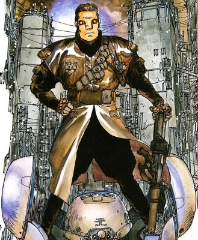
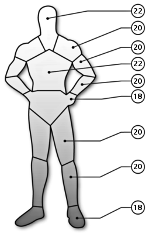
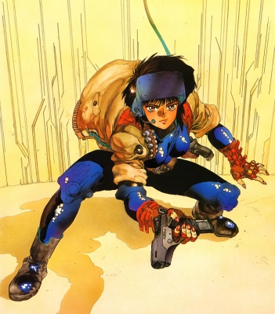

Les valeurs données le sont sans les bonus/malus (visée laser, liaison superarme, encombrement, etc) sauf pour les bonus aux caractéristiques dus à la cybernétique.
Dans le but de satisfaire tout le monde, ces personnages n'ont pas été créés avec le système d'Ocelot. Ceux qui utilisent le système alternatif de création de personnage n'auront aucun mal à les modifier pour satisfaire leurs besoins.
| Nom | Batou | Rôle | Cop | Armure |
|  | Sexe | Age | |
| H | ~32 |
| Caractéristiques |
| INT | 8 |
| REF | 12 |
| TECH | 6 |
| SF | 10 |
| BT | 5 |
| CH | 6 |
| MVT | 10 |
| CON | 12 |
| EMP | 6 |
| Course | 50 m |
| Saut | 2,50 m |
| Levée | 60 kg |
 | NomEnc. |
Veste légèrement blindée0
Pantalon légèrement blindée0
Total0 |
| |
| Compétences[Base / Total] | [Base / Total] |
|
Capacités spéciales
Autorité[ 5 / ]
Sens du combat[ 9 / ]
Constitution
Endurance[ 9 / ]
Force[ 7 / ]
Natation[ 3 / ]
Sang froid
Connaissance de la rue[ 5 / ]
Interrogatoire[ 6 / ]
Intimidation[ 8 / ]
Intelligence
Bibliothèque[ 3 / ]
Education & Culture générale[ 6 / ]
Expert (contre-terrorisme)[ 6 / ]
Expert (opérations secrètes)[ 6 / ]
Perception[ 8 / ]
Se cacher/semer[ 5 / ]
Suivre/pister[ 6 / ]
Survie en milieu hostile[ 5 / ]
|
Réflexe
Armes automatiques[ 5 / ]
Armes lourdes[ 6 / ]
Art martial (Krav-Maga)[ 5 / ]
Athlétisme[ 4 / ]
Combat sous-marin[ 4 / ]
Conduire automobiles[ 8 / ]
Conduire moto[ 7 / ]
Discrétion[ 5 / ]
Esquive[ 4 / ]
Fusil[ 7 / ]
Mêlée[ 7 / ]
Pistolet[ 9 / ]
Technique
Armurerie[ 6 / ]
Crocheter[ 5 / ]
Explosifs[ 6 / ]
|
| |
| Arme(s)[#] | Type | Préc. | Diss. | Mun. | Dégâts | Charg.[#] | Cad. | Fiab. | Portée |
| Seburo Bobsons[1] | PST | 0 | P | 9 mm C | 2D6+1D3+1 | 10[3] | 2 | TF | 50 m |
| Seburo J10[1] | SMG | +2 | M | 10 mm C | 2D6+3 | 50[0] | 2/3/25 | TF | 250 m |
| |
| Equipement | Cybernétique |
| Inconnu | Inconnu |
| |
| Background |
| Batou is a brawny man who, like Motoko, is an expert in covert operations. He has been working as Motoko's partner for many years, and it is likely that they may have to served together in the armed forces. He is almost always cool and level headed, and acts as a foil to the Major's sometimes-rash judgement. Like Motoko, Batou is a full borg. Unlike Motoko he seems to have an overtly military body. |
| Nom | Deunan Knute | Rôle | Solo | Armure |
 | Sexe | Age |  |
| F | 23 |
| Caractéristiques |
| INT | 9 |
| REF | 10 |
| TECH | 5 |
| SF | 9 |
| BT | 8 |
| CH | 8 |
| MVT | 7 |
| CON | 8 |
| EMP | 6 |
| Course | 35 m |
| Saut | 1,75 m |
| Levée | 40 kg |
 | NomEnc. |
Arasaka Gasium K-6 Battlesuit1
Total1 |
| |
| Compétences[Base / Total] | [Base / Total] |
|
Capacités spéciales
Autorité[ 3 / ]
Sens du combat[ 9 / ]
Beauté
Habillement et style[ 4 / ]
Look[ 5 / ]
Constitution
Endurance[ 4 / ]
Force[ 3 / ]
Natation[ 5 / ]
Sang froid
Connaissance de la rue[ 4 / ]
Interrogatoire[ 4 / ]
Résister à la torture/drogues[ 3 / ]
Empathie
Baratin & Persuasion[ 3 / ]
Social[ 2 / ]
|
Intelligence
Education & Culture générale[ 7 / ]
Gestion[ 1 / ]
Langue étrangère (amharique)[ 4 / ]
Langue étrangère (japonais)[ 4 / ]
Langue étrangère (anglais)[ 9 / ]
Perception[ 8 / ]
Se cacher/semer[ 5 / ]
Suivre/pister[ 5 / ]
Survie en milieu hostile[ 7 / ]
Réflexe
Armes automatiques[ 7 / ]
Armes lourdes[ 5 / ]
Art martial (Kupigana Ngumi)[ 3 / ]
Art martial (Judo)[ 6 / ]
Art martial (Krav-Maga)[ 8 / ]
Athlétisme[ 9 / ]
Conduire automobiles[ 4 / ]
Conduire moto[ 6 / ]
Discrétion[ 6 / ]
Esquive[ 7 / ]
Fusil[ 5 / ]
Mêlée[ 9 / ]
Piloter armures assistées[ 9 / ]
Pistolet[ 10 / ]
Technique
Armurerie[ 3 / ]
Contrefaçon[ 3 / ]
Crocheter[ 4 / ]
Déguisement[ 3 / ]
Electronique[ 3 / ]
Explosifs[ 4 / ]
Gentech[ 4 / ]
Pickpocket[ 2 / ]
Premiers soins[ 3 / ]
|
| |
| Arme(s)[#] | Type | Préc. | Diss. | Mun. | Dégâts | Charg.[#] | Cad. | Fiab. | Portée |
| Poseidon-Norinco Gong[1] | PST | +1 | M | CAL12 | 4D6/2D6/1D6+1 | 6[3] | 1 | TF | 100 m |
| |
| Equipement | Cybernétique |
| Inconnu | Aucune |
| |
| Background |
Deunan is the pointman, lover and partner to Briareos. She is complex mix of several races including French, African, English and American. She met "Bri" in 2116 at the early age 11, and the two immediately formed a close friendship. Briareos originally took the role of the protective uncle in Deunan's life but as she grew older their relationship became more personal and intimate. Deunan's mother was murdered by racists in South Africa, afterwards her father Carl Knute took his children to America. Deunan has several siblings but not much is known about them or her parents.
Her father Carl trained Deunan extensively for combat. He he was head of LAPD SWAT before the war but no real details exist as of yet. Deunan is well trained in virtually all combat proficiencies and is a confident martial artist, not very strong she makes up for this weakness with speed and agility. Hitomi headhunted her and Briareos, they were living in America's badside at the time and Hitomi convinced them to come to Olympus. Since then they have again taken up their roles in law enforcement and are integral members of E-SWAT. |
| Nom | Major Motoko Kusanagi | Rôle | Cop | Armure |
|  | Sexe | Age |  |
| F | 35-40 |
| Caractéristiques |
| INT | 9 |
| REF | 15 |
| TECH | 6 |
| SF | 7 |
| BT | 8 |
| CH | 6 |
| MVT | 15 |
| CON | 15 |
| EMP | 5 |
| Course | 75 m |
| Saut | 3,75 m |
| Levée | 75 kg |
 | NomEnc. |
Combinaison intégrale niveau 21
Total1 |
| |
| Compétences[Base / Total] | [Base / Total] |
|
Capacités spéciales
Autorité[ 7 / ]
Interface[ 3 / ]
Sens du combat[ 9 / ]
Constitution
Endurance[ 8 / ]
Force[ 7 / ]
Natation[ 3 / ]
Sang froid
Connaissance de la rue[ 5 / ]
Interrogatoire[ 6 / ]
Intimidation[ 6 / ]
Empathie
Commandement[ 4 / ]
Social[ 3 / ]
Intelligence
Bibliothèque[ 4 / ]
Education & Culture générale[ 8 / ]
Expert (contre-terrorisme)[ 6 / ]
Expert (opérations secrètes)[ 7 / ]
Perception[ 6 / ]
Se cacher/semer[ 5 / ]
Suivre/pister[ 6 / ]
Survie en milieu hostile[ 3 / ]
|
Réflexe
Armes automatiques[ 8 / ]
Armes lourdes[ 4 / ]
Art martial (Krav-Maga)[ 7 / ]
Athlétisme[ 4 / ]
Combat sous-marin[ 6 / ]
Conduire automobiles[ 6 / ]
Discrétion[ 6 / ]
Esquive[ 4 / ]
Fusil[ 7 / ]
Mêlée[ 6 / ]
Pistolet[ 7 / ]
Technique
Armurerie[ 6 / ]
Contrefaçon[ 4 / ]
Crocheter[ 7 / ]
Explosifs[ 6 / ]
|
| |
| Arme(s)[#] | Type | Préc. | Diss. | Mun. | Dégâts | Charg.[#] | Cad. | Fiab. | Portée |
| Seburo Bobsons[1] | PST | 0 | P | 9 mm C | 2D6+1D3+1 | 10[3] | 2 | TF | 50 m |
| Seburo C-X[1] | PST | +3 | V | 11 mm C | 3D6+2 | 16[2] | 2 | TF | 75 m |
| Seburo MN-40[1] | RIF | +2 | N | 5,56C | 5D6 | 30[2] | 2/3/15 | TF | 400 m |
| |
| Equipement | Cybernétique |
| Inconnu | Raven Microcybernetics Ghost
|
| |
| Background |
| Kusanagi's background is almost completely a mystery. What is known is that she served with some sort of military before, were she undoubtedly acquired the nickname "Major" (no it's not her section 9 rank). The "Major's" section 9 career began when she was scouted from the special maneuver team of the Ministry of Home Affairs. She is extensively trained in covert tactics, intelligence, and demolitions. Motoko is a full borg and only a part of her brain is from her original body. Although her body is made to look like a standard body, it is in fact highly advanced, top of the line combat model. Like all borgs of her type she is equipped with an advanced cyber-brain. Motoko appears to be in her early 20's but her actual age is estimated at being in her late 30's. |
| Nom | Togusa | Rôle | Cop | Armure |
 | Sexe | Age | |
| H | 27 |
| Caractéristiques |
| INT | 8 |
| REF | 7 |
| TECH | 6 |
| SF | 7 |
| BT | 7 |
| CH | 4 |
| MVT | 6 |
| CON | 7 |
| EMP | 8 |
| Course | 30 m |
| Saut | 1,50 m |
| Levée | 35 kg |
 | NomEnc. |
Veste légèrement blindée0
Pantalon légèrement blindée0
Total0 |
| |
| Compétences[Base / Total] | [Base / Total] |
|
Capacités spéciales
Autorité[ 5 / ]
Constitution
Natation[ 3 / ]
Sang froid
Connaissance de la rue[ 5 / ]
Interrogatoire[ 6 / ]
Intimidation[ 3 / ]
Empathie
Perception humaine[ 6 / ]
Intelligence
Bibliothèque[ 3 / ]
Education & Culture générale[ 7 / ]
Expert (lois)[ 6 / ]
Perception[ 8 / ]
Se cacher/semer[ 5 / ]
Suivre/pister[ 5 / ]
Survie en milieu hostile[ 5 / ]
|
Réflexe
Armes automatiques[ 4 / ]
Athlétisme[ 4 / ]
Conduire automobiles[ 7 / ]
Conduire moto[ 5 / ]
Discrétion[ 5 / ]
Esquive[ 4 / ]
Fusil[ 4 / ]
Lutte[ 4 / ]
Pistolet[ 9 / ]
Technique
Crocheter[ 5 / ]
|
| |
| Arme(s)[#] | Type | Préc. | Diss. | Mun. | Dégâts | Charg.[#] | Cad. | Fiab. | Portée |
| Mateba Model 208[1] | PST | +2 | V | .357M | 3D6+2 | 6[2] | 2 | TF | 50 m |
| |
| Equipement | Cybernétique |
| Inconnu | Aucune |
| |
| Background |
| Togusa is considered an outsider by the other members of Section 9, because his body is completely human (except for his plugs and neural connection to the communications networks) and because he is married with kids. These are precisely the reasons that Kusanagi had him transferred to Section 9 from the police department. Motoko claims that his humanity acts as a foil to the rest of the members of Section 9, who are mostly cyborgs transferred from the military. Although Togusa is not as experienced as the rest of the Section 9 members, he is an integral part of the team. He prefers the use of his Mateba revolver to any of Section 9's high tech weaponry. |